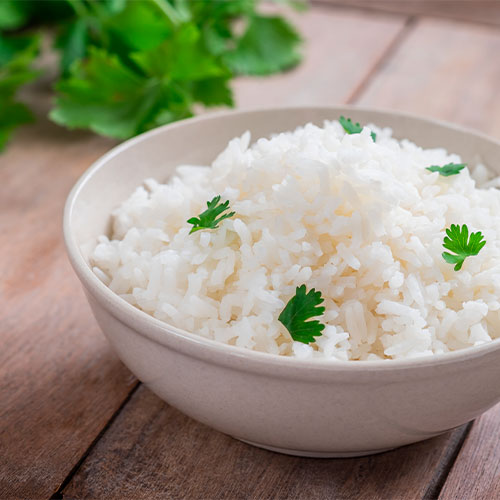

Comida favorita y su receta
Arroz Blanco:

Ingredientes:
- 1 taza de arroz
- 2 tazas de agua
- 1 cucharada de aceite
- 1/2 cucharadita de sal (recomendado)
- 1 diente de ajo (opcional, picado o entero)
Instrucciones:
- Calentar el aceite: En una olla o sartén grande, calienta el aceite a fuego medio.
- Freír el arroz: sofríe el arroz en el aceite caliente por 1-2 minutos, removiendo constantemente.
- Añadir el agua y la sal: Añade las 2 tazas de agua y la sal al arroz (y el ajo si estás usándolos). Remueve para asegurarte de que todo el arroz quede bien distribuido.
- Cocer el arroz: Cuando el agua empiece a hervir, baja el fuego a bajo y cubre la olla con una tapa. Cocina durante unos 15-20 minutos, o hasta que el agua se haya evaporado completamente y el arroz esté tierno.
- Dejar reposar: Apaga el fuego y deja reposar el arroz con la tapa puesta durante unos 5 minutos para que termine de cocerse con el vapor.
Hora tienes un delicioso arroz blanco. Puedes acompañarlo con cualquier platillo o disfrutarlo solo.